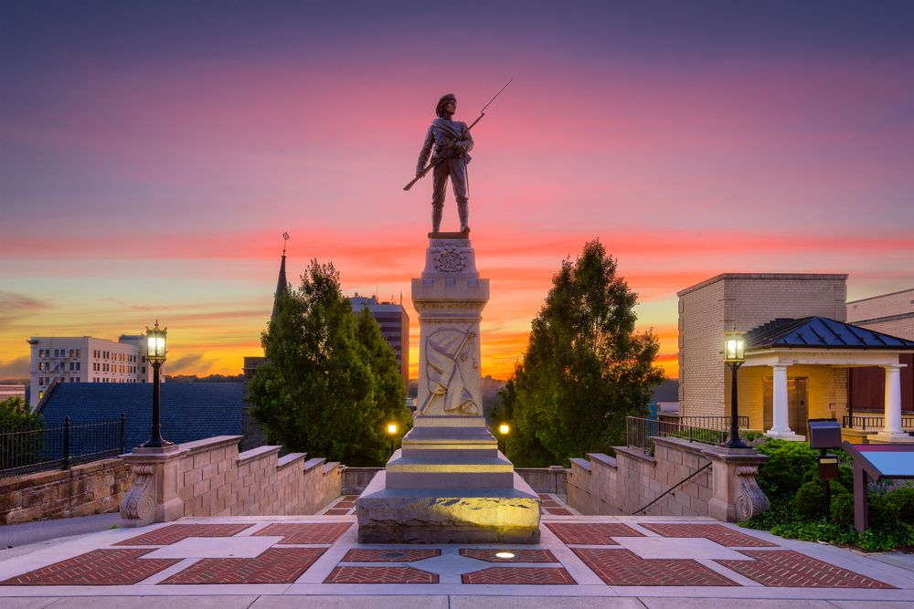

Popular Place to Visit
Visitors can explore historic locations, family attractions, museums, and outdoor recreation throughout the city.

Top Attractions
- Blackwater Creek Trail
- Amazement Square
- Lynchburg Museum
- Old City Cemetery
- Point of Honor
Why you need to visit Lynchburg
Blackwater Creek Trail is popular for walking, running, and biking. Amazement Square provides hands-on experiences for families, while the Lynchburg Museum introduces visitors to the history of the city. You will enjoy your visit in Lynchburg, VA.